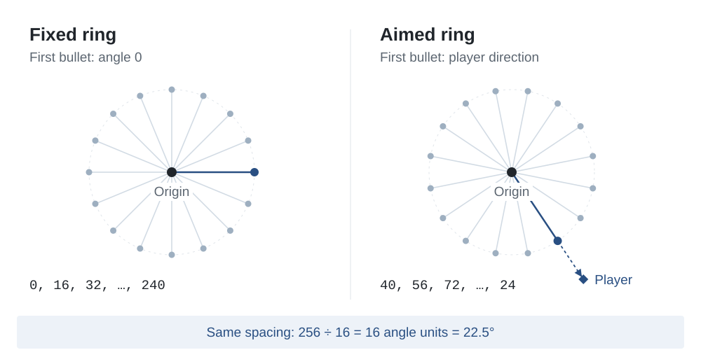

Reverse engineering, with your coding agent
Find out how
software works.
REA gives your agent the tools to inspect a program and explain what it does.
Set up REA
Copy this into your coding agent:
Install REA and connect it to this coding agent using npx rea-agents@latest setup. Show me the setup plan for approval, then verify the installation.
Or run this in your terminal:
npx rea-agents@latest setup
Approve the setup plan, then restart your agent.
Example 01 · Chrome’s dinosaur game
Change the dinosaur’s speed.
Inspect the speed rule with REA, rebuild a small version, then change the speed and play.
Play the reconstruction
Original rule: start at 6, then increase toward 13.
Use REA to inspect this dinosaur game. Why does it get faster? Show the speed rule, then build a small version with an adjustable speed.
Inspected target: wayou’s Chromium-derived browser edition.
if (this.currentSpeed < this.config.MAX_SPEED) {
this.currentSpeed += this.config.ACCELERATION;
}Start at 6. Add 0.001 each update without a collision, while speed is below 13.
Open the speed lab →From the running game to a new version
- 01 · InspectREA returns the loaded scriptThe agent reads the update function and its speed settings.
- 02 · RebuildUse the recovered ruleStart at 6 and add 0.001 while speed is below 13.
- 03 · Change and playMake speed adjustableKeep the original acceleration, or choose your own pace.
See the script, checks and how to try the analysis
REA inspected the HTTP browser edition through a local debugging
connection and returned the loaded index.js,
including its source and digest.
ACCELERATION: 0.001,
MAX_SPEED: 13,
SPEED: 6We called the original game’s update function in a controlled browser check, with obstacles and automatic scheduling disabled. After 4,000 updates, speed was 10.0; after 10,000, it was 13.0, rounded to one decimal.
The new mini-game keeps that speed rule. Its drawing, jumping and collision code are a small teaching implementation. Open the lab to see the new code and run the same speed check.
To inspect the target yourself, follow the browser connection steps using the dinosaur page. Give your agent that page URL and your local debugging endpoint, then copy the prompt above.
What is reverse engineering?
Finding out how software works by examining the program.
In the dinosaur example: which code makes the game get faster?
Before REA · You investigate
-
01
Find the script behind the game.Which loaded file controls the dinosaur?
-
02
Find the update function.Where does the game change its speed?
-
03
Recover the speed rule.Follow the starting speed, increment and threshold.
-
04
Check the result.Replay the rule and compare it with the game.
Find this branch inside a 90 KB script:
if (this.currentSpeed < this.config.MAX_SPEED) {
this.currentSpeed += this.config.ACCELERATION;
}
With REA · You ask your agent
Use REA to inspect this dinosaur game. Why does it get faster? Show the speed rule.
It starts at 6. Each update without a collision adds 0.001 while speed is below 13.
After 4,000 updates, speed is 10.
You can replay the rule to check it.
Your agent uses REA to locate and read the code, then connects the findings to your question.
Example 02 · Windows Calculator
What does the % button actually do?
The answer depends on the operator. Compare addition and multiplication.
Try the calculation
10% of 200 = 20. Then 200 + 20 = 220.
REA finds the branch. The agent explains it.
The installed app’s calculation code checks for multiplication or division before computing the percentage.
if (operation == multiply || operation == divide) {
percent = current / 100;
} else {
percent = current * previous / 100;
}- Addition
200 + 10% → 200 + 20 → 220- Multiplication
200 × 10% → 200 × 0.1 → 20
See the real code and how the answer was checked
-
01 · Inspect calc.exeA launcherREA finds
ShellExecuteWopeningms-calculator:. -
02 · Inspect the appCalcViewModel.dllIts % handler checks two operator IDs and uses the constant
100. - 03 · Interpret and checkTwo percentage rulesMicrosoft’s public implementation and unit tests explain the same distinction.
0x180124945: MOV EAX, dword ptr [R13 + 0x18]
0x180124949: CMP EAX, 0x5c
0x18012494c: JZ 0x180124aba
0x180124952: CMP EAX, 0x5b
0x180124955: JZ 0x180124aba
0x18012495b: MOV EDX, 0x64#define IDC_MUL 92 // 0x5c
#define IDC_DIV 91 // 0x5b
#define IDC_PERCENT 118 // 0x76
0x64 = 100Use REA to inspect Windows Calculator. Why does 200 + 10% give 220? Show the code behind the % button.
Inspected with REA 4.1.0: Windows Calculator 11.2508.4.0, x64. The readable summary uses names from Microsoft’s public source to explain the recovered branch.
Percentage implementation · Microsoft’s test cases · Native setup guide
Your first investigation
Try REA on a small app.
Download our Notes example, trace its CSV export, and check one changed input.
What REA can analyze
Choose a guide for your binary, JavaScript app or browser session.
Native binaries
Inspect functions, strings, references and call relationships in executables and libraries.
Native analysis guideJavaScript & Electron
Map modules, routes, IPC and native dependencies from an application folder or ASAR archive.
Application workflowsBrowser & runtime activity
Capture selected browser or process activity, then compare the results across runs.
Browser observation guideCase study · Native
Rebuilding DX-Ball
DX-Ball is a 1996 Windows game. The project is reconstructing it in C, using REA to inspect the executable and independent tests to check the recovered behavior.
Work so far covers boards, resources, brick hits, animations, particles and bonus production. The playable game is still in progress.
- 55
- functions in maintained C
- 45,380
- original-x86 differential cases
- 33
- complete functions with matching compiled bytes
Case study · Electron
Notion's Electron clipboard
A copy operation crosses from the page to Electron's main process. Inspect Notion's packaged JavaScript with REA, then follow one channel through the wrappers to the system clipboard.
Short code excerpts show each handoff. A second figure explains how an HTML marker connects ordinary clipboard text to Notion's structured block data.
Follow the clipboard bridgeClipboard IPC channel
invokerInMain(
"notion:clipboard:write"
)addListener(
"notion:clipboard:write",
handler
)Case study · PC-98 DOS
TH04's aimed bullet rings
Inspect a 16-bit DOS function with REA. Follow its angle calculation from original instructions to readable C++, then see how adding the player's direction turns a ring of bullets.
See the bullet calculationFixed and aimed rings

Case study · CTF
Solve a CTF flag checker
Use REA to inspect an easy DownUnderCTF binary. Extract its checking rules, solve for the flag and confirm that the original program accepts it.
See the CTF solutionOne check reveals one character
Mask: skip 21, select 1, skip 14
Target: 55
code[21] = 55 → '7'What would you like to understand?
Connect REA to your coding agent, or run your first analysis from the terminal.